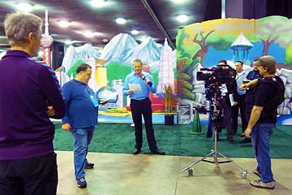
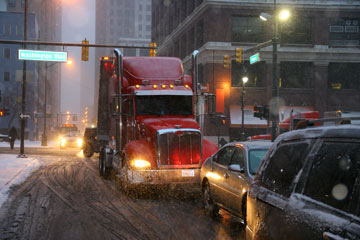
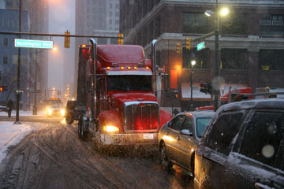
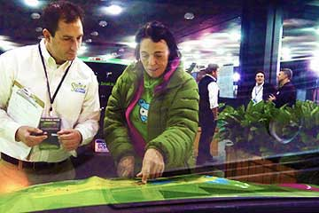
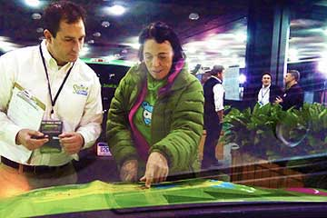

De fleste elbilejere lader bilen op hjemme og kører kun frem og tilbage til arbejde eller på indkøb. Det er nemt og bekvemt. At køre langt i elbil handler om at finde strøm udenfor hjemmet, hvad der ikke altid er så nemt. Underligt nok, for der er jo elektricitet allevegne. Men der er altid omstændigheder. Så idag tilbragte vi fire timer i en stor gavebutik med cafeteria. Imens fik Grønne en ledning ud ad bagdøren. Til natten fandt vi et motel hvor en venlig kvinde i receptionen gav os et værelse med strøm til Grønne, og et andet værelse med varmeovn til os. Så heldige kan vi også være. Vi nærmer os New York...
Nina


Da vi forlod det historiske hus havde jeg taget angorasokker på og benvarmere af et par afklippede strømper. Nede i bunden af bilen lå et sammenrullet liggeunderlag og ovenpå en dunjakke inde i en flosjakke med to flasker varmt vand. Når jeg stak benene ind i jakkerne kunne jeg nogenlunde holde fødderne varme. Ved frokosttid travede vi gennem snebunker på de fortovsløse veje for at komme hen til en genbrugsbutik og et cafeteria. Jeg opdagede at der var huller i mine sko og jeg fik våde strømper. Denne aften var vi heldige at få et godt værelse på et af de indiskejede moteller. Grønne fik sit eget elstik uden på bygningen så vi kunne have varme på værelset i hele den frostkolde nat. Godt for min hule hoste og Hjaltes iskolde tæer.
Nina


Forpuppede i vores dunsoveposer lå vi og ventede på at det skulle blive morgen. Klokken seks var Hjalte oppe og vække hotelværten som slog relæet til, så Grønne igen kunne få strøm. Det var hård frost og en af battericellerne var under 0 grader. Morgenmaden på det bundfrosne værelse blev hvad vi havde: Havregryn med lidt honning og varm nescafe hældt på. I frostvejr kører Grønne ikke så langt på en opladning. Heldigvis fandt vi et firma i Clyde der reparerede camping-biler. Der sugede Grønne strøm imens vi spiste frokost og varmede os på en kæderestaurant. Om aftenen kom vi til et hotel hvor Grønne ikke kunne få strøm. Vi måtte så køre til et Bed and Breakfast i Oberlin på den allersidste procent. Lidt for nervepirrende, men det endte med en garage med strøm til Grønne, og et fint lunt værelse med en himmelseng til os. Huset som var bygget i 1830 havde en interessant historie. Det havde været en station i "den underjordiske jernbane" et netværk som hjalp bortløbne slaver på deres flugtrute til Canada. Vi så det hemmelige rum under gulvet hvor slaverne kunne skjule sig.
Nina og Hjalte

Et flmhold fra NBC filmede os og Grønne! Med lidt held bliver indslaget på et minut i deres store reportage om Detroit Auto Show. Da det var overstået og Grønne var opladet tog vi en hjertelig afsked med vores venner Linda og Bruce som vi havde boet hos. Det sneede da vi forlod Detroit. For at spare kører vi stadig uden varme i bilen, da det ville tage en del af strømmen. En solnedgang som syntes aldrig at ville slutte satte horisonten i brand bag det mørke vinterfrosne landskab. Da Grønne var ved at løbe ud for energi var der ikke noget motel i nærheden. Så helt mod vores principper måtte vi køre 20 kilometer tilbage og nåede kun lige akkurat frem. Jeg spiste et gammelt stykke brød og lidt mandler til aftensmad. Vi tog varmeapparatet fra og satte Grønne til. Om natten skete der det som ikke måtte ske: Motellets relæ slog fra, så Grønne holdt op med at lade i 9 graders frost.
Nina

The Northmerican International Auto Show gav os en masse promovering - tak skal I have! Det var alletiders at dele vores eventyr med jer og tilhørerne til vores pressekonference. Billederne fra Gobi-ørkenen gav en ide om hvad vi har været igennem og hvad Grønne har klaret. På Venturis stand mødte vi Xavier Chevrin som kørte fra Shanghai til Paris med sin kone Géraldine Gabin i en Citroen EV. Elbils-ekspeditioner skaber vor tids eventyr. Vi håber at møde dem begge i Monaco til Monte Carlo Rally for elektriske biler. Da vi kørte hjem fra udstillingen gav vinteren os en smagsprøve på en Michigan snestorm. Linda og Bruce, vores generøse værter fra Electro Auto Association har samlet nogle klip med Grønne fra medierne:
Detroit Free Press: http://www.freep.com/article/20110112/BUSINESS01/101120373/-1/BLOG14/x26template/x3drss/x26mime/x3dxml/Around-world-in-11-months-for-Danish-Moto-Mundo-duo
WOMC Radio: http://womc.radio.com/tag/moto-mundo/
SATnews Daily: http://www.satnews.com/cgi-bin/story.cgi?number=1714272154
AutoBlog Green: http://green.autoblog.com/2010/12/21/moto-mundos-nissan-qashqai-electric-detroit-auto-show/
NextCars.net: http://www.nextcars.net/moto-mundos-nissan-qashqai-electric-travels-around-the-world-to-visit-detroit-auto-show/
Engadget: http://www.engadget.com/2010/12/23/moto-mundo-world-tour-pushes-all-electric-nissan-qashqai-to-its/
Firmaet Afuture som har bygget vores elbil er gået konkurs. Det får ikke nogen betydning for vores verdensomrejse, da vi selv ejer bilen og betaler rejsen. Vi fortsætter derfor ufortrødent, og håber på at bilen aldrig går i stykker, nu da der ikke længere er et værksted. Søren Ekelund har dog lovet fortsat at supporte os med gode råd... han fortsætter på elbilfronten på anden vis.
Nina og Hjalte


En hel dag på Detroit Auto Show. Først gav vi ture med Grønne og prøvede selv alle de andre elbiler på prøvebanen. Oppe i den store udstillingshal viste de store bilfabrikker mange elbiler og hybrider! Det var årets store nyhed og nogle af bilerne er allerede på markedet. Bilerne skinnede i lampelyset og så vidunderlige og forførende ud i lak og læder. En af Hjaltes favoritter var Fords Focus, mens jeg hældede mere til den nye Tesla personbil. BYD, Mercedes, Smart, Honda, Audi, VW og mange flere var på banen med EL. Men alt taget i betragtning står Grønne sig stadig godt med hensyn til ladetid og kørekilometer. Og faktisk kørte kilometer! Kunderne venter på den masseproduktion som kan gøre elbilerne billigere - og batterierne bedre. Nu kommer elbilerne!
Nina
 

Bruce og Linda kørte med os de 60 km ind til Detroit i deres hybrid-Ford. Vi fandt Autoshowet og fik Grønne kørt ind. Den store udstilling skulle åbne næste dag og der blev arbejdet overalt. Alle de nye biler stod og skinnede. Igen i år var de spændende nyheder elektriske biler. Næsten alle de store bilfabrikker var på vej med elektriske biler. En af de smukkeste var den nye Tesla familiebil, hvis skinnende aluminiumskrop svævede over gulvet - og den barske motor. På vejen hjem så vi på Detroit, en af USAs storbyer værst ramt af nedgang og arbejdsløshed. Rundt om en lille kerne af skyskrabere ruiner og tomhed. Om morgenen havde Bruce, der havde haft ansvar for miljøtiltag på en af Fords fabrikker, talt på en konference om nye jobs i Michigans nye grøn industri. Men vi er kommet sent igang, sagde han til os. Linda have arbejdet på biblioteket i univertsitetsbyen Ann Arbor 50 km fra Detroit. En meget afslappet by fuld af studenter og fodgængere. Vi spiste alle fire en dejlig middag på et mikrobryggeri med restaurant.
Nina og Hjalte
 

I klingende frost og tindrende sol kører jeg, Grønne, ind i Detroit, bilernes hovedstad. Glad og stolt standser jeg foran portene til North American International Auto Show på den aftalte dag. Skyskraberhøje bannere viser nye bilmodeller, Porte glider op og jeg bliver vist på plads i den enorme underetage mellem de nye elbiler. Hektisk aktivitet, arbejdere, elektrikere, arrangører. En mand polerer mig, ladestandere er tilsluttet og i morgen vil jeg give journalisterne en prøvetur på banen i underetagen.
Mange hilsner Grønne


Om morgenen var alt dækket af et tykt lag sne som gnistrede og blinkede i ni graders frost. Vi kørte af sted fra Waterloo forsynet med varm kaffe og en isskraber. Vi kunne konstatere at i så hård frost kørte Grønne fint, men ikke mere end 1,2 km pr. procent opladning. Vi snuppede derfor en frokost-opladning på et par timer. Så fortsatte vi, stadig uden varme i bilen for at spare på strømmen ad den gamle hovedvej 12 fra Chicago til Detroit. I Saline havde Linda fra elbilklubben på vores hjemmeside set Grønne nærme sig, så hun stod ude på gaden og bød os velkommen da vi rundede gadehjørnet! Grønne fik straks strøm i Linda og Bruce's garage, og vi kom indenfor i et varmt gammelt træhus hos de søde mennesker. En time senere kørte vi af sted for at spise middag med den lokale elbilforening. Nogle havde hjemmebyggede elbiler, eller hybrider og en gammel mand havde en original elbil fra 1920!
Nina